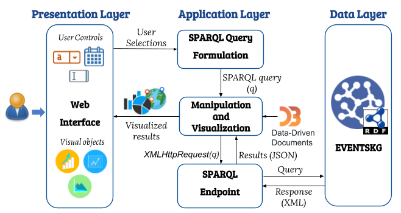

Data visualization supports professional knowledge understanding and furthermore improves the analysis of semantic data. Currently, there are lots of visualization tools available for visualizing RDF data to facilitate deduction of insights for human. In this paper, we present a web-based service, VizResu, for the visualization of linked data retrieved by a public SPARQL endpoint. A specific scholarly knowledge graph, EVENTSKG, is considered as a use case for analyzing metadata of renowned scientific events in eight computer science communities. EVENTSKG is a 5-star dataset (licensed under the terms of Creative Commons Attribution 4.0 Unported (CC-BY-4.0)) which contains 73 computer science event series belongs to eight CS communities; Artificial Intelligence (AI), Software and its engineering (SE), worldwide Web (WEB), Security and privacy (SEC), Information systems (IS), Computer systems organization (CSO), Human-Centered Computing (HCC) and Theory of Computation (TOC). Event's metadata are interlinked in RDF graph, in which each event is described appropriately by means of the data and object properties using the Scientific Events Ontology (SEO). Finally, VizResu is intended to support semantic data analysis by visualizing the results of predefined query templates using an asynchronous web application.
VizResu, a Web-based service for the visualization of linked data retrieved from a public SPARQL endpoint. The focus is on mapping query results returned by the SPARQL endpoint to a specific chart type. Eg., graph chart for qualitative data, column/bar chart for quantitative ones. A semi-automatic approach that generates various charts from SPARQL queries over data represented as RDF graphs is introduced in the system. EVENTSKG is used in the context of the metadata analysis of renowned scientific events belonging to eight Computer Science communities.
SPARQL non-specialists, can conveniently producing SPARQL queries, extending from easy to complex ones by utilizing the intuitive web interface. Moreover, the query so formed is shown to make it simpler for end-users to comprehend whether an alteration is required before execution. A definitive objective behind this work is to broaden the access to semantic data on the Web by making it simpler to create and execute SPARQL queries and the executed SPARQL results are converted into the visualized charts by using D3.